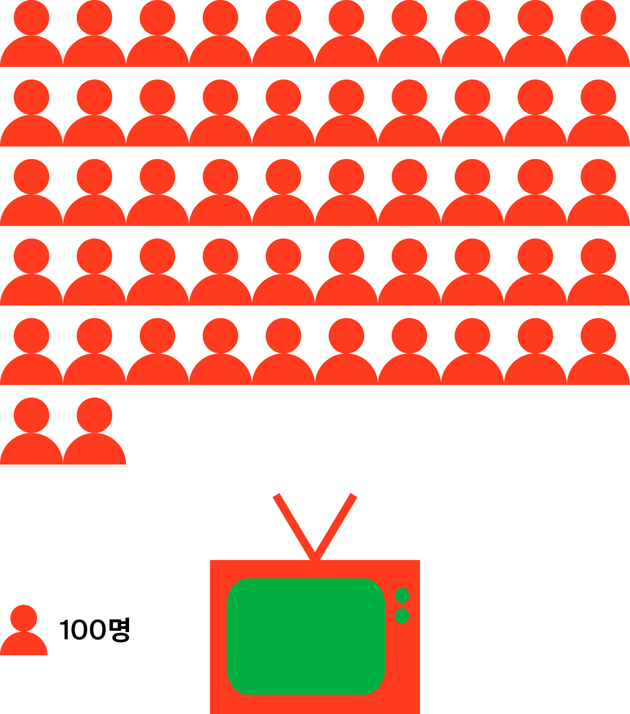
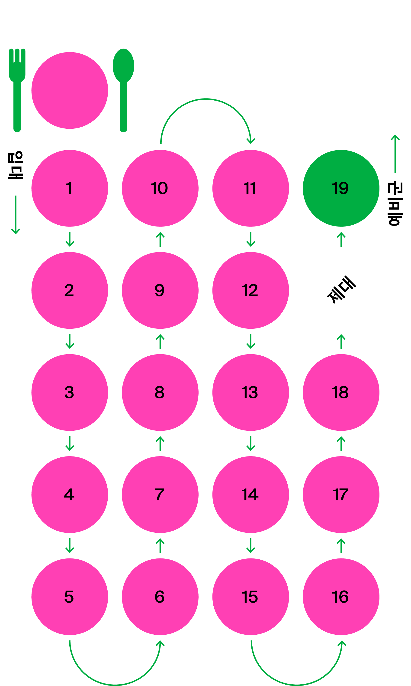
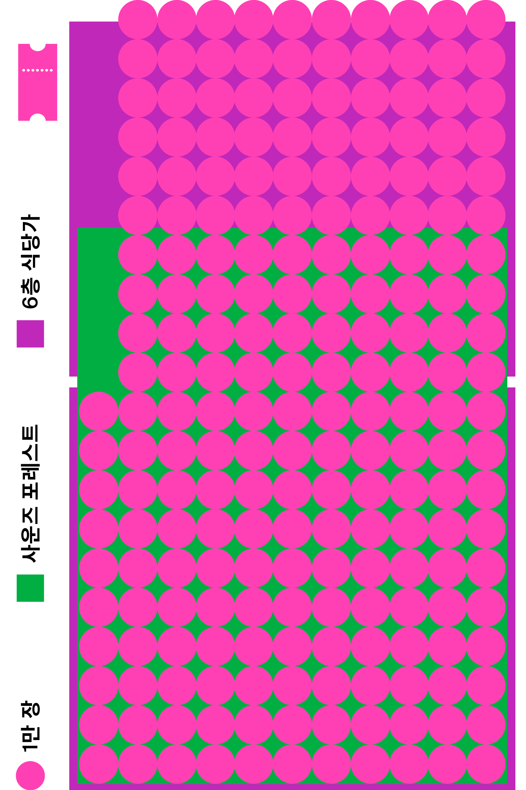

지난 1년간 서울 주말의 유동인구 1위는 강남구 역삼 1동이 차지했다. 핫플레이스보다 주거지역 및 오피스 타운이 주변의 교통과 생활 인프라를 껴안으며 우세한 양상을 보였다.
1
강남구
역삼1동
1.13%
2
종로구
종로1·2·3·4가동
1.02%
3
마포구
서교동
1.00%
4
영등포구
영등포동
0.89%
5
서초구
반포4동
0.84%
6
영등포구
여의동
0.76%
7
송파구
잠실6동
0.72%
8
용산구
한강로동
0.68%
9
서초구
서초3동
0.68%
10
양천구
목1동
0.65%
11
중구
회현동
0.65%
12
강서구
공항동
0.59%
13
중구
명동
0.59%
14
구로구
신도림동
0.59%
15
강남구
압구정동
0.58%
지금 가장 핫한 서울의 유동 인구 비율
2020년 대비 핫 스폿 증감율
지금 가장 핫한 성수, 안국, 압구정, 용산, 여의도 5개 지역 유동인구 조사 결과, 팬데믹 여파로 대부분 감소세를 보였지만, 성수 지역만 증가세를 보이며 뜨거운 화제성을 입증했다.
“잘 봐, 미술관 플렉스야”
미술관&박물관 TOP 3
2021년 한해 동안 서울러들이 가장 많이 방문한 미술관 및 박물관은 롯데월드 민속박물관으로 나타났다. 국립중앙박물관과 국립현대미술관 서울관이 그 뒤를 이었다.
여긴 꼭 가야 해!
여의도 방문 건수 TOP 9
지난 1년간 여의도 유동인구 조사 결과, 대중교통 시설, 공공장소를 제외하면 더현대 서울이 상업 공간 중 1위를 차지했다. (단, 1인 1일당 여러 곳을 방문하는 등 방문 건수는 중복이 있을 수 있음)
여의도 총 방문자 중 더현대 서울을 찾은 비율
전년 동기 대비 여의도 요일별 방문 건수 비율
21년 여의도 평일 방문 건수는 전년 대비 감소하는 추세를 보였으나, 주말만큼은 증가 추세를 보였다. 여의도 내 주말 상권이 활성화되었음을 추정할 수 있다.
여의도 방문객 중 더현대 서울을 방문한 비율
21년 주말 여의도를 방문한 사람 중, 무려 21%의 방문객이 더현대 서울을 찾으며 대중의 인기를 확인했다.
우리는 깐부
더현대 서울 방문객이 택한 여의도 내 교차 방문지
1위는 IFC몰이었으며 2위는 여의도 한강공원으로 IFC몰의 절반 정도의 교차 방문 비중을 차지했다. 더현대 서울을 찾는 방문객의 니즈가 IFC몰, 여의도 한강공원과 궤를 같이한다는 것을 추측할 수 있다.
혼저 옵서예 *
* ‘어서오세요’를 뜻하는 제주 방언
수도권을 제외한 방문자 지역 TOP 5
수도권을 제외한 더현대 서울의 방문자 지역 1위는 제주도가 차지했다. 어느새 ‘서울에 오면 꼭 들러야 할’ ‘서울을 대표하는’ 장소로 자리 잡은 것. 세종시, 대전 유성구가 나란히 2, 3위로 뒤를 이었다. 더현대 서울은 광역시 및 김포공항과 가까운 입지를 통해 불과 1년 만에 전국을 아우르는 새로운 랜드마크로 존재감을 다졌다.
나를 가장 잘 아는 공간
더현대 서울 층별 방문객 분포
지난 한 해 동안의 층별 선호도를 살펴보면 지하 1층 테이스티 서울이 가장 높았으며 지하 2층, 1층, 5층, 6층, 4층, 3층, 2층 순으로 나타났다. 국내 최대 규모의 글로벌 식품관 테이스티 서울은 맛의 선택지를 넓혔으며, MZ세대를 겨냥한 크리에이티브 그라운드 역시 취향을 저격하는 필수 코스로 자리 잡았다.
The HYUNDAI Seoul TMI
‘많이’와 ‘증가’, ‘열광’과 ‘인기’라는 모호한 말 대신 기분 좋게 끄덕이게 하는 또렷한 말로 지난 1년의 여정을 담았습니다.
* 모든 수치는 2022년 2월을 기준으로 합니다.
좌표가 궁금해?
더현대 서울의 숨은 뷰 명당은 2층 카페 오븐 안쪽 창가 자리다!
내부자 피셜, 2층 카페 오븐 안쪽 창가 자리에서 바라보는 워터폴가든 뷰는 최고의 조망을 자랑한다.
13
더현대 서울은 축구장 13개 크기다
서울 최대 규모의 영업면적 8만 9100m2(2만 7000평)으로 FIFA 기준 7140m2의 축구장 13개를 합한 크기다.
4:30PM, 6:00PM
고백에 성공하는 시간은 오후 4시 30분과 6시다
모든 것은 타이밍. 분위기가 도와주는 더현대 서울의 매직 아워는 따로 있다. 겨울에는 오후 4시 30분부터 약 40분간, 여름에는 오후 6시부터 1시간가량. 자연 채광과 조명이 어우러져 따뜻하고 낭만적인 운치를 자아낸다. 인증샷은 거들 뿐!
480만 명
더현대 서울의 F&B를 방문한 누적 고객 수는 뉴질랜드 전체 인구와 비슷하다
뉴질랜드 전체 인구수는 489만 8201명이다.(KOSIS 기준)
71만 2962L
1년간 판매한 음료량을 모두 더하면 무려 소방차 254대를 채울 수 있다
총 285만 1849잔을 판매했으며 이를 합하면 71만 2962L(소방차 1대당 평균 물 적재량 2800L)다.
* 카페 레이어드, 테일러 커피, 카멜 커피, 슈퍼말차, 블루보틀, 제네랄드링크샵, 올댓커피, 스타벅스, 카페 오븐, 고디바, 백미당, 미켈레, 버틀러 커피를 대상으로 했습니다.
빨간 맛
리처드 로저스 경이 설계한 더현대 서울 외벽 기둥의 팬톤 컬러는 185C다
심리학자 쿠르트 골드슈타인은 ‹색채가 신체 기관에 미치는 영향에 대한 보고서›에서 빨간색은 신체 활동과 결정에 도움이 된다고 했다. 글로벌 랜드마크를 상징하고 에너제틱한 재충전을 표현하는 그야말로 최적의 컬러인 셈이다.
54km
카페 레이어드에서 1년간 판매한 스콘을 일렬로 세우면 성층권을 뚫을 수 있다
총 54만 7500개를 판매했으며, 개당 높이 10cm로 이를 더하면 총 54km에 달한다.
* 성층권 : 대류권 위로부터 고도 약 50km까지의 대기층
8000m
호우섬에서 판매한 만두의 접시를 세우면 히말라야 정상에 오른다
약 11만 7886접시를 판매했으며 이를 나란히 세우면 8000m. 세계에서 13번째로 높다는 히말라야산(8035m)과 맞먹는다.
1063km
이탈리에서 판매한 스파게티 길이를 더하면 서울과 부산을 왕복할 수 있다
총 1063km로, 서울 부산을 왕복한 약 800km를 훌쩍 뛰어넘는다.
5200만 시간
CH1985에서 회원들이 각자 수강한 강의 시간을 합하면 대한민국 국민 전체가 1번씩 참여한 것과 같다
1년간 총 수강 회원 수는 1만 3000명, 총 강좌 수는 4000개에 이른다. 강의 시간을 평균 1시간이라고 가정하면, 5200만 시간이다.

1265만 원
BGZT Lab에서 가장 비싸게 팔린 스니커즈는 에어 조던 1 × 디올 하이 OG 리미티드 에디션이다
2020년 4월 전 세계 디올 매장에서 1000켤레 한정으로 발매되었으며 국내 발매가는 300만 원. 리셀가는 4배 넘게 오른 1256만 원으로 이는 TV, 냉장고, 세탁기, 건조기를 포함한 웬만한 혼수 가전 세트와 맞먹는 가격이다.
1.46배
태극당에서 판매한 모나카 아이스크림을 펼쳐놓으면 거대 아이스링크를 꽉 채우고도 남는다
모나카 1개의 크기는 11×6cm로 총 39만 9671개를 판매해 면적 약 2637m2다. 이는 국제규격 1800m2 아이스링크 대비 1.46배에 달하는 수치다.
1년 7개월
더현대 서울의 모든 메뉴를 하루 한 끼씩 먹으면 만기제대를 한다
지하 1층, 6층에 자리한 미식 로드의 메뉴는 총 600개. 하루 한 끼씩 맛보면 약 19개월이 소요되므로 군 복무 기간인 18개월 (육군 기준) 동안 매일 먹어도 남는다.

1007명
최고 기록 예약 인원이 줄 서면 마포대교를 넘는다
2021년 5월 1일 카멜 커피는 일일 기준 1007명이라는 최고 웨이팅을 기록했다. 1m 거리 두기 유지 시 길이 1400m인 마포대교 입구에서 끝까지 설 수 있다.
4200m2
ALT.1 방문객의 티켓을 펼치면 사운즈 포레스트를 덮는다
평균 1시간씩 20만 명이 관람했다. 방문 티켓을 펼치면 어떻게 될까? 티켓 규격 10×21cm로 총 판매 부수 20만 장을 환산하면 4200m2(1270평)다. 사운즈 포레스트를 덮고도 남고(약 1000평), 6층 식당가 면적(약 650평)의 2배에 달한다.

3305m2
사운즈 포레스트에서는 호흡하는 순간 보너스가 생긴다
산림청이 발표한 리포트에 따르면 우리나라 산림의 공익적 가치는 221조 원에 달한다. (2018년 기준) 국민 1인당 연간 428만 원의 공익적 혜택을 받는 셈인데, 사운즈 포레스트는 외부가 아닌 3305m2 (1000평)의 인도어 네이처(Indoor Nature)를 조성해 더 많은 자연과 혜택을 가까이에서 누릴 수 있도록 했다.
의도한 눈물
더현대 서울에서 가장 습도가 높은 매장은 지하 1층 레솔베르다
시가는 적정 습도 70%를 유지해야 품질 보존이 가능하므로 시가 전문 매장에서 습도 관리는 필수다.
9배의 즐거움
1인당 평균 체류 시간은 온라인 플랫폼 대비 9배다
더현대 서울의 1인 평균 체류 시간은 79분(4740초)으로 온라인 플랫폼 1위인 무신사 8분 15초(495초, 2020년 기준)의 9배다. 오감을 자극하는 재미도 9배란 뜻?!
* 로플랫 수집 데이터를 기반으로 분석했습니다.
4336km
테이스티 서울을 즐기기 위해 웨이팅한 줄은 칠레를 관통한다
총 255만 441명으로 일렬로 서면 4336km가 넘는다. (1.7m 거리 두기 기준) 러시아 다음으로 세계에서 두 번째로 긴 칠레를 관통하고도 남는다. 남북으로 길게 이어진 칠레의 국토 길이는 4300km다.
573km
AI 로봇 큐브릭은 서울에서 제주도를 완주했다
1년간 큐브릭이 더현대 서울 내에서 이동한 총 거리는 573km로 서울에서 제주도까지 470km를 웃돈다.
1만 8000 걸음
지하 2층부터 6층까지 걸으면 평균 1만 8000보로 1296kcal가 소모된다
에너지 소모량은 체중과 성별, 체력 수준, 걷는 방법에 따라 각각 다르지만 표준 조건 기준으로 1만 보를 걸으면 약 720kcal가 소모된다. (1보당 0.072kcal)
31
더현대 서울의 큰손은 서른한 살이다
30대가 37.6%로 높은 구매 비중을 차지했으며 그중에서도 31세가 가장 높은 구매력을 보여주었다.
더현대 서울은 현재 진행형입니다.
더현대 서울 1주년을 기념한 디지털 리포트는 보다 다채로운 감각으로 더현대 서울의 면면을 뜯어보고 숨은 가치를 발견하고자 하는 마음에서 출발했습니다. ‹The Hyundai Seoul Now› 제작에 도움을 주신 모든 분께 감사드립니다.
Partners for
THE HYUNDAI SEOUL
기획, 취재, 편집
홍지은
사진
김민은
사진 어시스턴트
박성환
교열
유미영
디자인
홍은주 김형재 (이예린 도움)
데이터 수집 및 분석
로플랫, 더현대 서울
‹The Hyundai Seoul Now›의 저작권은 현대백화점에 있으며 실린 글과 사진을 무단 전재하거나 복제하여 사용할 수 없습니다.
ⓒ 2022 by The Hyundai Seoul
로플랫은 LG CNS와 네이버 등에서 투자를 받은 빅데이터 스타트업으로, 와이파이(wifi) 데이터를 이용해 무기명으로 실내 유동 인구를 측위하는 데이터 전문기업입니다.
모든 데이터는 DISTINCT date, adid 기준으로 ‘방문 건수’를 측정했습니다.
여의도, 더현대 서울 분석 기간
2020: 2020. 2. 28 ~ 12. 31
2021: 2021. 2. 26 ~ 12. 30
나머지 상권 분석 기간
2020. 1. 1 ~ 12. 31
2021. 1. 1 ~ 12. 31